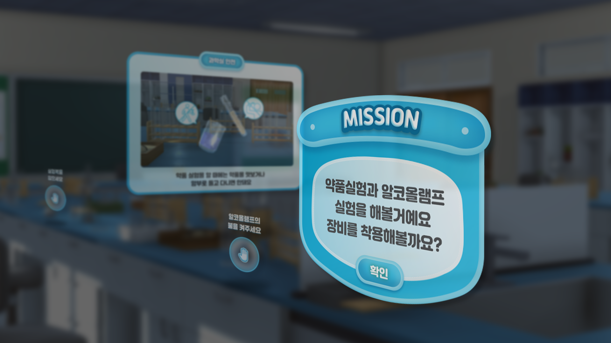

안전교육 VR
UI 디자인
어린 학생들이 겪을 수 있는 교통안전, 화재안전,
과학실 등 위험 상황에서 직접 안전 수칙을
체험하며 학습하는 VR의 UI 디자인

Concept
과학실 안전, 가정 화재 안전, 하교 시 교통 안전, 총 3가지의 챕터로 나누어져 있는 이 VR은 각각의 챕터의 이미지와 맞게 색을 설정하여 챕터를 나누었고, 아이들이 이용하는 VR이므로, 아기자기한 색과 디자인을 사용하였다. 게임 내 아이템을 선택하는 버튼은 행동을 유도하도록 디자인하였다.


게임이 끝난 후 교육 내용을 정리하는 팝업은 아이들이 이해하기 쉽도록 이미지를 첨부하였다.